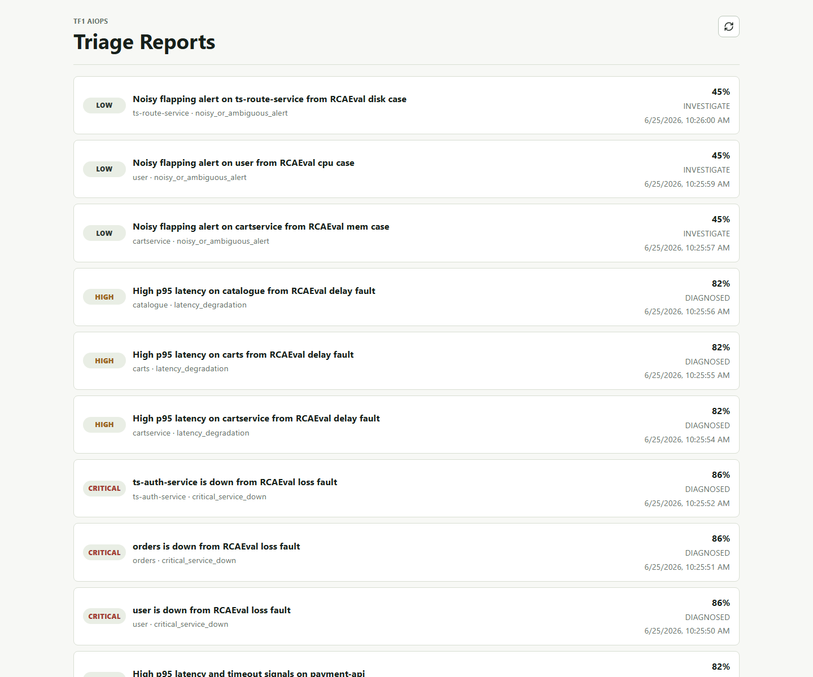
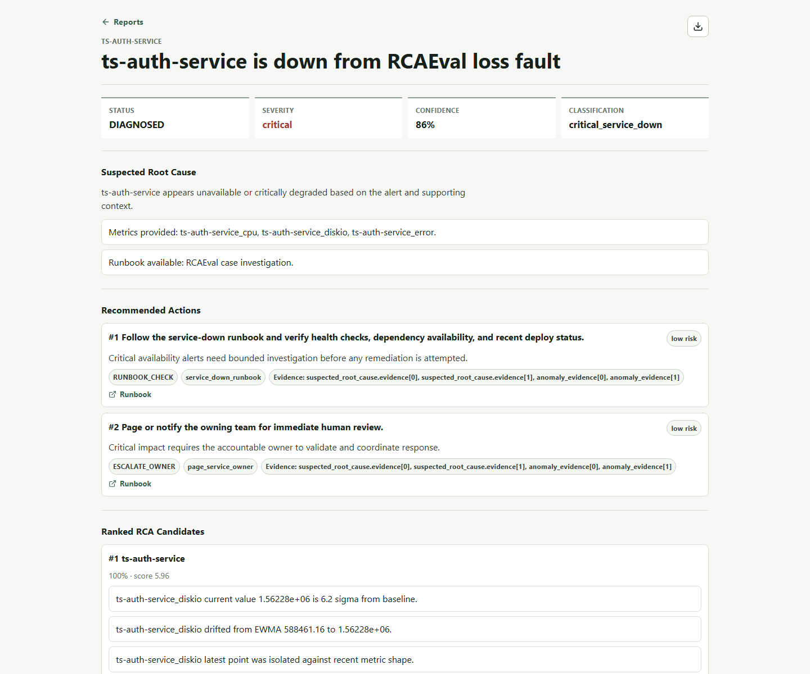
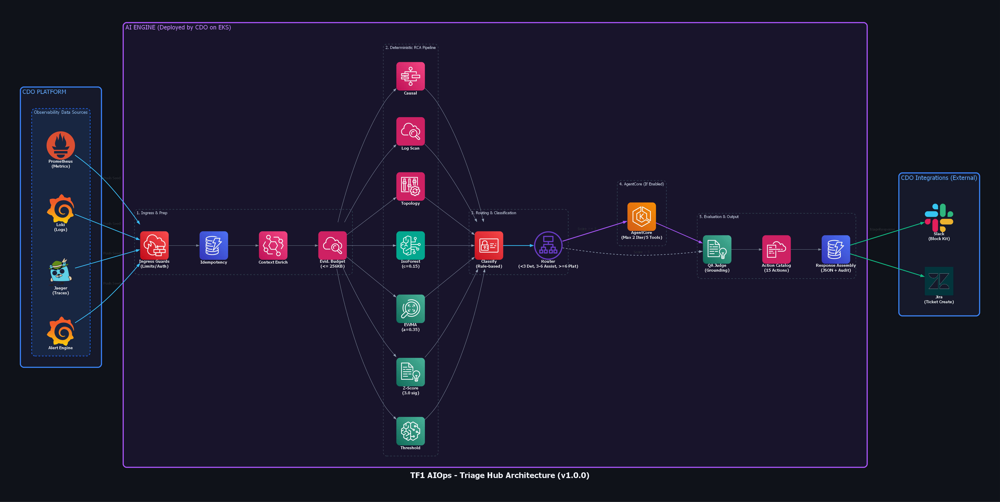

A bounded AI triage engine that reduces manual on-call digging, keeps human-in-the-loop, and hands a signed contract payload to CDO.
On-call đang mất 30-60 phút cho mỗi alert chỉ để đào log, query metric, tạo Jira, và tìm owner.
Problem statement lấy trực tiếp từ TF1 learner brief.
Sản phẩm B2B đang chạy production.
Nhiều service, nhiều signal rời rạc.
On-call team nhỏ, burnout nặng.
Mỗi alert mất 30-60 phút tới root cause.
Context thay vì alert trống.
Suggestion phải actionable, không generic.
Ticket/Slack payload có assignee suggestion.
Evidence normalization → anomaly detectors → RCA ranking → confidence gates → AgentCore loop → QA judge → action catalog.
LLM/AgentCore không được đứng đầu pipeline. Evidence phải được clean, score, rank, gate trước.
The engine combines threshold checks, statistical drift, shape anomaly, and log evidence.
Latency ≥ 1000ms, error/5xx ≥ 5, availability < 95, CPU/memory ≥ 85.
Latest point compared to baseline; abs(z) ≥ 3 creates high-severity evidence.
α = 0.35; catches drift when current deviates from smoothed expected value.
contamination = 0.15, random_state = 7; catches latest-point shape anomaly.
Error-like logs are counted by service using tokens: error, timeout, failed, refused, exhausted, down, deadline. Count/5.0 becomes a bounded log score.
We rank candidate services from metric/log evidence, dependency hints, recent deploys, and lag correlation.
Evidence file: capstone/tf-1/ai/engine-skeleton/reports-e2e/rcaeval-benchmark-matrix-2026-07-01.md
Hidden alert metadata exposed a bad keyword shortcut: metric names made too many cases look like latency.
Removed raw metric-name keyword matching and scored only actual anomaly evidence.
Full RCAEval-v2, 735 cases, hidden alert metadata, deterministic only.
Full 735-case run with production-like metadata and evidence contract.
We report deterministic full-dataset runs separately from AgentCore sampled runs because their latency and cost profiles are different.
| Mode | Dataset | Metadata | AgentCore | Accuracy | Macro F1 | Avg latency |
|---|---|---|---|---|---|---|
| Conservative lower bound | 735 full | hidden | off | 62.45% | 48.11% | 0.47 ms |
| Production-like path | 735 full | mapped | off | 89.66% | 81.03% | 0.45 ms |
| AgentCore sample | 15, 5/class | hidden | on | 93.33% | 93.27% | 2138.69 ms |
| AgentCore + metadata sample | 15, 5/class | mapped | on | 93.33% | 93.27% | 2162.09 ms |
Evidence file: capstone/tf-1/ai/engine-skeleton/reports-e2e/mtta-mttr-before-after-2026-07-01.md
| Metric | Before | After deterministic | After AgentCore | What is measured |
|---|---|---|---|---|
| MTTA proxy | 15-30 minutes | ~0.45-0.47 ms | ~2.1 s | alert/evidence -> actionable diagnosis + ticket payload |
| MTTR proxy | 60-120 minutes | reduced by Jira/Slack/SQS handoff | same + reasoning audit | time to routed owner action, not full production resolution |
| Handoff consistency | manual, engineer-dependent | structured JSON + audit_id | structured JSON + AgentCore metadata | repeatable ticket/slack payload |
Screenshot artifact: reports-e2e/rcaeval-report-list-ui-rendered.png

Screenshot artifact: reports-e2e/rcaeval-detail-ui-rendered.png

Evidence file: capstone/tf-1/ai/engine-skeleton/reports-e2e/rcaeval-e2e-results.json
| Case | Expected → Actual | Status | Confidence | Evidence Count | Top RCA |
|---|---|---|---|---|---|
re2tt_ts-auth-service_loss_1 | critical_service_down → critical_service_down | DIAGNOSED | 0.86 | 10 | ts-auth-service |
re2ss_catalogue_delay_2 | latency_degradation → latency_degradation | DIAGNOSED | 0.82 | 7 | catalogue |
re1ss_carts_delay_1 | latency_degradation → latency_degradation | DIAGNOSED | 0.82 | 4 | carts-db |
re1tt_ts-route-service_disk_3 | noisy_or_ambiguous_alert → noisy_or_ambiguous_alert | INVESTIGATE | 0.45 | 7 | ts-route-service |
The engine decides whether to diagnose, investigate, or ask for more context.
Evidence supports classification and RCA candidate.
Human review or AgentCore-assisted investigation path.
Missing metrics/logs/deploy/ownership or evidence URI out of scope.
| Signal | Effect on complexity score | Why |
|---|---|---|
| missing metrics/logs | +2 each | RCA cannot be strongly grounded. |
| confidence < 0.7 | +2 | Route to assisted investigation. |
| confidence < 0.5 | +1 extra | Very low confidence should not diagnose. |
| top two RCA candidates within 0.15 | +2 | Ambiguous candidate ranking. |
Mode selection is based on complexity score, not vibes.
Evidence is enough; no AgentCore needed.
Need bounded help/synthesis, still compute-first.
AgentCore investigator can request allowlisted evidence tools.
This is the key AgentCore slide: max 2 iterations, max 5 tool calls, strict JSON, read-only tools only.
No shell, no PromQL/LogQL from agent, no Jira create, no Slack post, no remediation commands, no arbitrary production credentials.
tool_requests for bounded read-only evidence, or final_diagnosis with classification, status, confidence, evidence, recommended action IDs, and QA.
Evidence files: reports-e2e/rcaeval-hidden-metadata-agentcore-sample15.json and reports-e2e/rcaeval-mapped-metadata-agentcore-sample15.json
5 cases per class, matching mentor feedback for minimum per-class coverage.
Same result for hidden-metadata sample and metadata sample.
Bounded runtime call with 1 iteration and 1 tool call for demo control.
If AgentCore fails or is disabled, deterministic result still returns.
arn:aws:bedrock-agentcore:us-east-1:589077667575:runtime/tf1_ai_investigator-D48STMEUHo - Bounds: 1 iteration / 1 tool call for the benchmark.The QA judge penalizes unsupported diagnosis; action catalog keeps recommendations constrained.
Missing evidence, unsupported classification, unsupported root cause, invented service/signal, unsafe action.
Deterministic QA can apply -0.1; LLM QA can return confidence_delta from -0.2 to 0.
Recommendations are IDs from a curated catalog, not free-form remediation.
/v1/triageUse this slide when panel wants the full system view: data sources, deterministic RCA, AgentCore path, QA judge, response assembly, and CDO integrations.

This is the stable interface CDO can consume.
ccbb47f + CDO/Triage-Hub commit ab8e209, completed on 2026-06-26.Not a mock slide: API, worker fix, AgentCore runtime, DynamoDB audit, and compatibility fallback are implemented/documented.
/v1/triage returns classification, RCA, actions, ticket payload, metadata.
aiops_worker.py sends bearer token when service auth is enabled.
Runtime READY in us-east-1, cross-account invoke allowed for CDO role.
Stores audit trail and idempotency replay records.
DynamoDB-backed owner suggestion with JSON fallback for local/demo.
Tenant-scoped audit, low-confidence investigate mode, no auto-remediation.
Use one incident path and make it crisp.
p95 latency 950ms, DB timeout logs, high severity.
latency_degradation, confidence 0.82, status DIAGNOSED.
Suspected DB connection pool exhaustion. Human reviews DB saturation.
audit_id → show ticket_payload → query audit/replay.Enough for capstone demo and clear enough for CDO/DevOps handoff.
Current AI code path validated.
Critical down, latency, noisy false alert.
AI/AIO and CDO both signed.
Runtime policy attached for CDO invoke.
kubectl kustomize passed, Jira evidence cleaned up, A0X-32 Done.Client explicitly scoped it out. AI diagnoses and suggests; human confirms and acts.
Bounded investigator runtime. CDO can invoke it cross-account when needed.
Audit trail and idempotency replay. Every decision can be traced.
CDO owns dispatcher and mutation. AI returns CDO-compatible payload.
Worker missed bearer token with service auth enabled. Fixed to avoid 401 on deploy.
Status becomes INVESTIGATE. The engine does not guess.
Contract-stable, auditable, retry-safe, and ready for CDO E2E alert → ticket → notify flow.
API, worker, AgentCore, DynamoDB, owner lookup, docs.
Payload schema, runtime ARN, policy, deploy notes.
Slack AgentCore Q&A through CDO dispatcher.